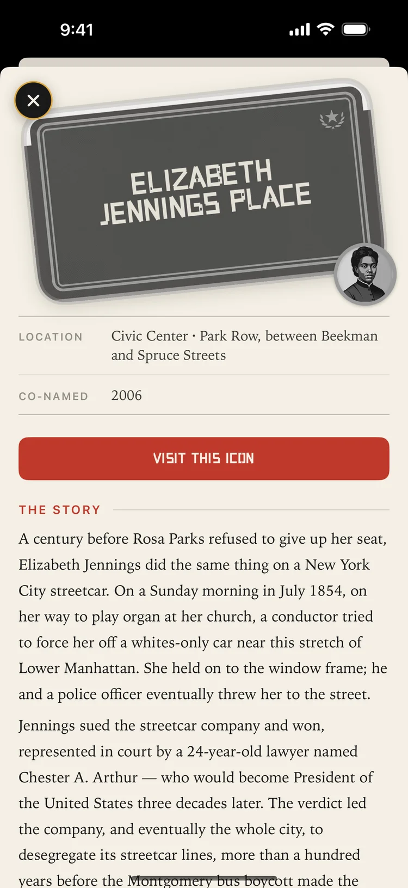
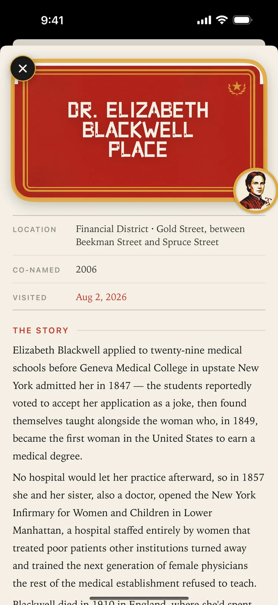
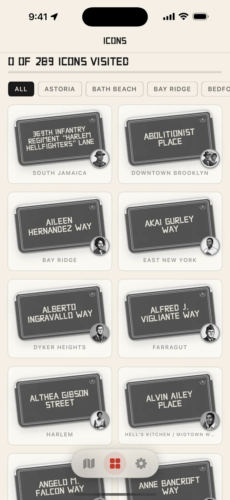

The history behind
the street signs.
There's a second name bolted above hundreds of NYC street signs — an activist, a musician, a doctor, a neighbor.
Know Your Block is a walking companion for those names: 289 honorary streets across all five boroughs, each with the story of the person behind it.
Learn your city through the people who shaped it.
Every honorary co-naming was earned — voted by the New York City Council to honor someone who mattered to their block, their borough, or the world. Most people walk past these signs every day without knowing the story. This app fixes that, one block at a time.
Find. Read. Walk.
Every sign on one map
A hand-styled map of New York with all 289 honorary street signs — from Christopher "Notorious B.I.G." Wallace Way to Elizabeth Jennings Place. Filter by civil rights, music, arts, public service, and more.
Real stories, real records
Each icon has a story page curated from NYC Council co-naming records and public sources: who they were, what they did, and why their block carries their name.
Visit in person to stamp it
Get within a block and the story comes to you. Stand where the history happened and the sign turns full color in your collection. No shortcuts — visiting means being there.
A walking history museum
On a Sunday morning in 1854 — a full century before Rosa Parks — a young Black schoolteacher named Elizabeth Jennings was running late for church when a conductor ordered her off a whites-only streetcar in Lower Manhattan. She held on. It took the conductor and a police officer together to tear her away. So she sued the streetcar company — represented by a 24-year-old lawyer named Chester A. Arthur, who would one day be President — and she won, setting New York's streetcars on the road to desegregation. Today a little block near City Hall quietly carries her name, and most people walk right past it. Stories like hers are waiting on every one of these blocks — go say hello.



How it works
Open the map
All 289 honorary streets appear as sign pins across the five boroughs. Browse anywhere — every story is readable from your couch.
Pick a block
Search for a figure, filter by category, or just see what's near you on your next walk.
Walk there
Get within about a block and the app offers you their story — with an optional nearby notification.
Stamp your visit
Standing at the street unlocks the visit. The sign turns red and gold, the portrait goes full color, and it's yours.
Built for walking, not watching you.
- No accounts, no ads, no sign-in — usable the moment it opens
- Your progress never leaves your phone
- Location is used only while the app is open, and never stored or transmitted by the app
- Notifications are generated entirely on your device — there is no server
- Stories curated from NYC Council co-naming records and public sources
- Free, with nothing to buy
Read the full Privacy Policy and Terms of Service.
Questions
Is it free?
Yes — completely free, with no ads and no in-app purchases.
Do I have to be in New York to use it?
No. Every one of the 289 stories is fully readable from anywhere in the world. Being in New York is only required for one thing: stamping a street as visited, which asks you to actually stand within about 40 meters of it. That's the point.
What permissions does it use?
Location (only while using the app) to show where you are and confirm visits, and optional notifications for nearby streets. You can decline both and still browse everything.
What data does the app collect?
The app itself collects nothing — your visit history and settings live only on your device. Map tiles are provided by Mapbox, whose SDK collects telemetry you can opt out of via the ⓘ button on the map. Details in the Privacy Policy.
Which streets are included?
A curated set of 289 honorary co-namings across Brooklyn, Manhattan, Queens, the Bronx, and Staten Island — chosen for having enough independently verifiable history to tell each story responsibly. Some pin locations are marked approximate in the app, pending verification against NYC records.
Is it affiliated with the City of New York?
No. Know Your Block is an independent project and is not affiliated with the City of New York, the NYC Council, or any honoree's estate.
Know your block.
The signs are already up. The stories are waiting. Take a walk.